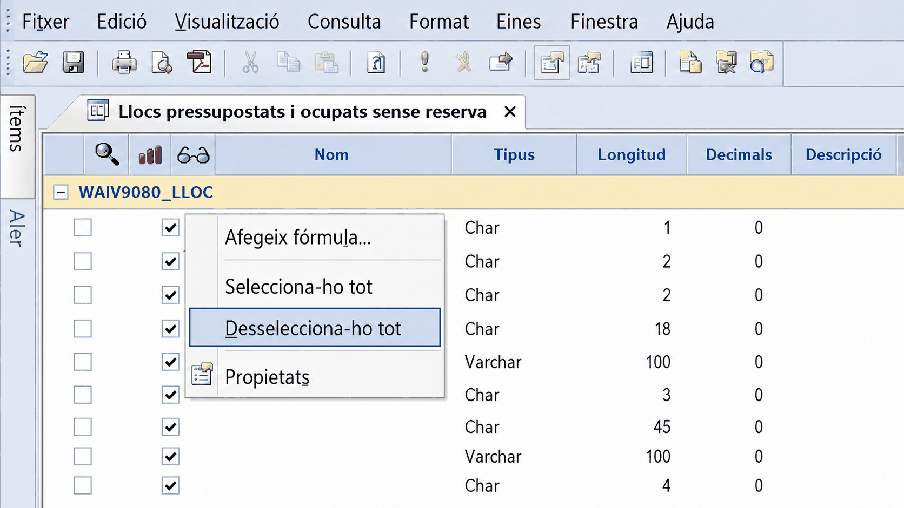
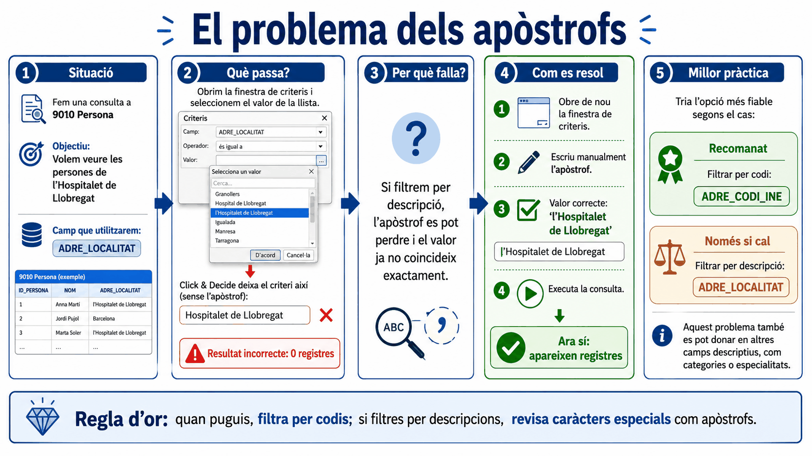
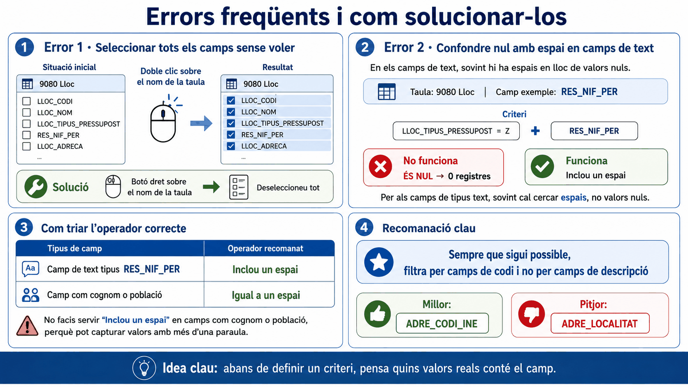

Apartat 1Abans de començar
El material oficial tanca el curs amb un recordatori de mètode que val més que qualsevol truc:
Tingueu clar l'objectiu
Abans de tocar el programa, sapigueu què heu de respondre exactament. La meitat dels errors del curs són d'encàrrec mal entès, no de consulta mal feta.
Penseu si cal creuar taules
És possible que la resposta necessiti dades de dues taules. Es poden relacionar a Click & Decide, o exportar-les i creuar-les a l'Excel o a l'Access.
Consulteu la documentació
Els PDF de la intranet expliquen els camps de cada taula i els seus codis. És on són les respostes que aquest curs no pot donar.
Recordeu l'abast del perfil
El que veieu depèn del perfil que us van donar. Si un company veu coses que vosaltres no, no és cap error.
Apartat 2La contrasenya i el bloqueig
Les credencials de Click & Decide són les mateixes que les del GIP. Si les introduïu malament diverses vegades, l'usuari queda bloquejat i haureu de contactar amb el servei d'atenció perquè el desbloquegin. I mentrestant tampoc podreu entrar al GIP.
És la unitat 2, i és l'únic error d'aquest curs que us pot aturar la feina durant hores sense que en depengui de vosaltres.
Apartat 3Error 1: la selecció massiva
Símptoma: obriu una consulta i apareixen tots els camps de la taula seleccionats de cop. La graella és il·legible i la consulta va lentíssima.
Causa: heu fet doble clic sobre el nom de la taula a la llista de camps, en comptes de sobre un camp.
Clic dret sobre el nom de la taula i Desselecciona-ho tot. No cal desfer-ho camp per camp.

Apartat 4Error 2: els camps de text buits
Símptoma: la consulta torna zero registres i esteu segurs que hauria de tornar-ne.
El cas del material oficial: voleu els llocs ocupats,
pressupostats i no reservats. Per assegurar que no estan
reservats, busqueu que el camp RES_NIFPER estigui buit, i li
poseu l'operador És nul.
Perquè RES_NIFPER és un camp de tipus text, i
per als camps de text Click & Decide deixa espais, no els deixa
en blanc. Tècnicament no són nuls, i per això la condició no la
compleix ningú.
Torneu als criteris i demaneu que el camp contingui (operador Inclou) un espai.
És la unitat 9 sencera, i ara ja sabeu per què: ve del farciment amb espais
dels camps Char que vam veure a la unitat 4.
Apartat 5El matís que ho complica
Aquí hi ha una excepció que el material remarca i que és fàcil de passar per alt.
Inclou un espai funciona en camps com un NIF, on els valors normals no tenen espais. Però en camps com un cognom o una població, els valors normals en tenen: cognoms compostos, poblacions de més d'una paraula.
En aquests camps, Inclou un espai us seleccionaria també tots els valors plens. Cal fer servir Igual a un espai.
| Tipus de camp | Operador | Per què |
|---|---|---|
| Data | És nul | Una data buida sí que és nul·la. |
| Text sense espais als valors, com un NIF | Inclou un espai | Cap valor real conté espais, així que només agafa els buits. |
| Text amb espais als valors, com un cognom o una població | Igual a un espai | Amb Inclou agafaríeu també els plens. |
Abans de triar l'operador, penseu: els valors normals d'aquest camp poden contenir un espai? Si la resposta és sí, aneu amb Igual.
Apartat 6Error 3: els apòstrofs
Símptoma: filtreu per una població i no surt ningú, tot i que sabeu que n'hi ha.
El cas: voleu les persones que viuen a l'Hospitalet de Llobregat. Aneu al camp de localitat, obriu els criteris, i en comptes d'escriure el valor el trieu del desplegable de valors amb la fletxeta de la pestanya Valor.
En seleccionar-lo, Click & Decide treu l'apòstrof. Al
criteri hi queda lHospitalet de Llobregat, que no existeix, i
la consulta torna zero registres.
El que hi posa el programa
El que hi heu de posar

Aquest cas és, precisament, l'exemple del problema de
filtrar per descripció en comptes de per codi. Amb el camp
ADRE_CODI_INE no hi hauria hagut cap apòstrof ni cap problema.
El mateix passa amb categories, especialitats i qualsevol altre camp de text lliure. És la regla d'or de la unitat 6, i aquí es veu per què.
Apartat 7Error 4: el format d'exportació
Símptoma: la consulta és correcta, l'exportació sembla correcta, i a l'Excel els creuaments no funcionen. Els valors es veuen idèntics.
Excel, format .xls
Exporta la informació tal qual, amb els espais que queden a la dreta dels valors.
Excel 2007, format .xlsx
Exporta només els valors i elimina aquells espais. Per regla general, és la millor opció.
Els dos formats són correctes i cap dels dos dóna error. La diferència només apareix quan intenteu creuar les dades amb una altra taula i no lliga res.
Apartat 8El mapa del curs
Aquests quatre errors tenen una cosa en comú i val la pena dir-la explícitament:
Dos tornen zero registres, un torna dades inflades i l'altre torna dades que semblen bones fins que les creueu. El programa no us avisarà mai. La defensa és saber què esperar i comprovar-ho.
| Símptoma | Sospiteu de | Unitat |
|---|---|---|
| Zero registres i els valors semblen bons | AND entre condicions incompatibles | 6 i 7 |
| Zero registres en buscar un camp buit | És nul sobre un camp de text | 9 i 18 |
| Zero registres filtrant per una població | L'apòstrof desaparegut | 18 |
| Surten més registres dels que hi hauria d'haver | Un OR sense parèntesi | 7 |
| Surt gent d'altres departaments | El mateix OR sense parèntesi | 7 |
| El recompte no quadra amb el nombre de persones | Taula de registres múltiples | 10, 12 i 14 |
| La columna de recompte està plena d'uns | Un camp de detall a la consulta | 10 |
| Files repetides de la mateixa persona i lloc | Falta la segona lògica de dates | 14 |
| Tinc més llocs que persones | No heu filtrat l'estat de plantilla | 8 |
| El paràmetre no pregunta res | Definit però no assignat | 16 |
| El paràmetre de data falla | El IGNORE no esborrat | 17 |
| Els creuaments a l'Excel no lliguen | Exportat amb el format antic | 15 i 18 |
| Els meus números no quadren amb els d'un company | Criteris diferents, no dades diferents | 8 i 13 |

Apartat 9Exercicis
Provoca els quatre errors
TrencaFeu-los tots quatre a propòsit, un darrere l'altre, i observeu el símptoma:
- Doble clic sobre el nom de la taula.
- És nul sobre un camp de NIF.
- Trieu una població amb apòstrof del desplegable de valors.
- Exporteu a Excel i mireu la llargada d'una cel·la de text.
Què hauria d'haver passat
- Tots els camps seleccionats. Es desfà amb Desselecciona-ho tot.
- Zero registres. Es resol amb Inclou un espai.
- Zero registres i l'apòstrof desaparegut del criteri. S'escriu a mà.
- La llargada és la del camp, no la del text. Es resol amb Excel 2007.
Fer-los una vegada a propòsit val més que llegir-los deu vegades: el dia que passin de debò, reconeixereu el símptoma.
El camp de població
ResolUs demanen les persones que no tenen la localitat informada a l'adreça.
Un company us diu que faceu Inclou un espai, com amb el NIF. Per què no serveix, i què heu de fer?
Solució
No serveix perquè les localitats normals contenen espais: Sant Cugat del Vallès, Vilanova i la Geltrú. Amb Inclou un espai us sortirien totes aquestes també.
La comprovació: mireu la columna de localitat al resultat. Ha de sortir buida a totes les files. Si hi apareix cap nom de població, heu fet servir Inclou.
Diagnostica sense veure la consulta
ResolUn company us descriu quatre situacions. Digueu on ha de mirar:
- "He demanat els alts càrrecs del meu departament i em surt gent d'altres departaments."
- "Tinc 340 baixes però només som 190 persones."
- "La consulta de vacants em dóna places que no es poden cobrir."
- "El meu informe diu 27 llocs i el de Funció Pública en diu 41."
Solució
1. Un OR sense parèntesi. Els filtres d'àmbit no s'apliquen a la branca de l'OR. Unitat 7, i es comprova al panell Camps.
2. Cap error: és una taula de registres múltiples i està comptant files, no persones. Li cal Distinct Agregats. Unitats 10 i 13.
3. Ha inclòs el codi V, que és
pressupostat i vacant però no ocupable. Unitat 9.
4. Probablement cap dels dos s'equivoca: un fa servir el criteri de RLT i l'altre el criteri ampli. Unitat 8. Abans de comparar xifres, compareu criteris.
Apartat 10Llista de comprovació final
Aquesta no és de la unitat: és de tot el curs. Considereu-vos autònoms quan pugueu fer tot això sense consultar res.
- Triar la taula correcta responent les tres preguntes de la unitat 00.
- Crear un projecte i una consulta, i desar-los amb noms que s'entenguin.
- Trobar qualsevol camp fent clic a la capçalera de la columna.
- Saber de quin tipus és un camp abans de filtrar-lo.
- Filtrar sempre pel camp de codi.
- Triar l'operador adequat entre els vint disponibles.
- Detectar quan un encàrrec necessita un parèntesi, llegint-lo.
- Comprovar l'agrupació al panell Camps abans d'entregar res.
- Distingir comptar files de comptar persones.
- Construir la lògica de solapament per a un període.
- Aplicar-la dues vegades quan cal reconstruir el passat.
- Descobrir la codificació d'un camp desconegut.
- Exportar amb el format que no deixa espais.
- Convertir una consulta repetitiva en una consulta amb paràmetres.
- Reconèixer els quatre errors d'aquesta unitat pel seu símptoma.
- Dir sempre amb quin criteri s'ha calculat una xifra.
Si hi ha una cosa que val la pena endur-se d'aquest curs, és que la mateixa pregunta admet respostes diferents i totes correctes. "Quantes vacants tenim", "quantes baixes hi ha hagut", "quants llocs tenim": totes tres tenen dues o tres xifres possibles segons el criteri.
Qui domina l'eina no és qui recorda on és cada botó, sinó qui sap quina de les respostes li estan demanant i ho escriu al costat del número.
Queda practicar. Els exercicis de cada unitat porten codi
EX- i es poden reproduir al simulador sobre dades generades,
comparant el vostre resultat amb el de control.